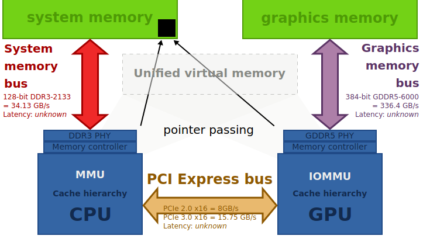

Howto..? What is ..?
How to get miscellaneous system info?
Which Linux version do I have?
lsb_release -a
(see below how to find kernel version)
How large is the memory page size (bytes) in my Linux system?
getconf PAGESIZE
What environment variables are currently set (and their values)?
set | less
To find the current value of some specific env variable:
echo $HOME
echo $PATH
The number of file descriptors used by the process with PID number pid:
ls -l /proc/pid/fd
ls -l /proc/pid/fd | wc -l
Miscellaneous process info (some of this cmds require superuser priv if the current user is not the owner of the process):
cat /proc/2208/cmdline
command line args of the process with PID = 2208 (random PID, just for demo);
ls -l /proc/2208/cwd
current working dir of the process with PID = 2208;
ls -l /proc/2208/exe
executable file (full path to the binary executable of the process);
cat /proc/2208/environ
environment variables used by the process;
ls -l /proc/2208/root
the root path as seen by the process;
cat /proc/2208/status
status info (run state, memory usage, etc);
sudo pmap 4237
detailed info about memory used by the process (pid = 4237);
sudo pmap 4237 | grep total
total size of memory used by the process;
System-wide maximum number of file handles:
cat /proc/sys/fs/file-max
or
sysctl fs.file-max
File descriptors in kernel memory (format: num of allocated file handles, num of unused-but-allocated file handles, system-wide max num of file handles):
cat /proc/sys/fs/file-nr
or
sysctl fs.file-nr
See also cat usage examples.
How to find Libc (Glibc) version?
The simplest way is probably
ldd --version
Or, you can just look at that file in that dir with your own eyes:
ls -al /lib/x86_64-linux-gnu/libc-*
ls -al /lib/x86_64-linux-gnu/libc.*
What libraries are used by this binary executable?
There are many ways. For example:
ldd ~/bin/digger
or
objdump -p ~/bin/digger
or
lsof -P -T -p objdump -p pid
Note that the third cmd is only applicable to the running processes, while the first two cmds query the executable file and work even when the program cannot be started because of the unsatisfied dependencies.
If ldd outputs "not a dynamic executable", it usually means that the executable is a static one, or it was built
for a different architecture, or some loader files are missing, or kernel version is too old, or library configurations are
incorrect. For example, it often happens with Go apps because they are usually statically linked.
Kernel version..
To find the current version of your Linux kernel, use the following cmds:
cat /proc/version
or
uname -r
The last cmd only shows kernel release numbers, and usually it's enough. But this cmd with a different option can give you even more info:
uname -a
displays
- Kernel name which is Linux for Linux, but can be different on BSD or macOS.
- Hostname (whatever you set).
- Kernel release numbers. It's complicated and was changing over time.
Ubuntu kernel numbers are not exactly the same as the mainline Linux kernel
numbers, and, probably, you should only pay attention to the first three:
- Kernel version
- Major revision
- Minor revision
- Patch (bug fix) number
- Some distribution specific word/string, aka flavour.
Some popular Ubuntu flavours are:
- generic - default kernel optimized for desktops;
- server - kernel optimized for servers;
- virtual - kernel optimized for for KVM, XEN, and EC2;
- Kernel name, time of built, etc (smth like #148~14.04.1-Ubuntu SMP Thu May 3 07:26:53 UTC 2018
- Machine architecture.
- Processor architecture.
- Operating system architecture (technically, you can run 32-bit x86 OS on a 64-bit x86_64 CPU).
- Operating system, which is usually GNU/Linux for Linux, whatever distribution.
Filesystem type..
There are many ways to find the filesystem type. For example:
df -Th
It's good, except that it displays USB flash drive as fuseblk instead of exfat.
lsblk -f
displays everything right but requires root priv (i.e., you
have to sudo ...).
mount | grep "^/dev"
also requires root priv and displays fuseblk instead of exfat. The following is better (assuming your USB flash drive is mounted on /dev/sdf1):
blkid /dev/sdf1
However, without sudo it shows nothing, and this could be
misleading. You can also use
cat /etc/mtab
but, once again, it displays USB flash drive fs as fuseblk instead of exfat. And notice that all these cmds display FAT32 as vfat which is right. But, technically, it could be FAT16, and besides, vfat is not actually a filesystem type, it's an extension, kind of addition to FAT providing support for long file names.
There is also findmnt:
findmnt /dev/sda3
Filesystem's mount options
Assuming it's already mounted, and you want to know what are actual mount options .. where to look?
You can look in /etc/fstab, or you can examine /etc/mtab, or you can try /proc/mounts. I prefer the last two because the /etc/fstab is not the best source of information: you can edit it (having root priv), make some minor mistakes, and something won't be mounted as supposed.
All the above files usually include too many lines. So, it would be good to know beforehand what do you want (e.g. device name would be helpful):
cat /etc/mtab | grep sda
cat /etc/mtab | grep /dev/sdb1
cat /proc/mounts | grep nvme
CPU temperature, fan speed, HDD temperature, ...
Make sure your system has sensors and hddtemp.
If not, see Hardware Monitoring / Sensors.
To see the current HW parameters (or, to be exact, sensors' data),
sensors
This is a console app, the output is not exactly user friendly, but all important info is present: temperatures, fan speeds, voltages, etc.
Note # 1: It does not display fans connected directly to Power Supply Unit! You can only see fans connected to motherboard!
Note # 2: Your system may not support some sensor chips, and in this
case you won't be able to see all info supplied by sensors. You can try to run
sensors-detect, but it's not safe (see man
sensors-detect).
To find the temperatures of HDDs and SSDs,
use hddtemp:
sudo hddtemp /dev/sda
sudo hddtemp /dev/sdb
You can get even more info about storage devices with
smartctl.
Memory Management Unit
See also Memory.
MMU, sometimes called PMMU (paged memory management unit), is a computer hardware unit having all memory references passed through itself, primarily performing the translation of virtual memory addresses to physical addresses.
MMU performs virtual memory management, handling at the same time memory protection, cache control, bus arbitration and, in simpler computer architectures (e.g. 8-bit systems), bank switching.
Typical MMU divides the virtual address space (the range of addresses used by the processor) into pages, each having a size which is a power of 2, usually a few kilobytes or larger. The bottom bits of the address (the offset within a page) are left unchanged. The upper address bits are the virtual page numbers.
PTE, TLB, paging, segmentation fault...
Service vs daemon
The border line between daemons and services in Linux is fuzzy.
The majority of experts would probably agree that systemd,
networkd, sshd are daemons. Not because their names
end with 'd' (this is rather a tradition), but because they are specifically
created to run at the background. Unix/Linux daemons (the name speaks
for itself) are invisible programs (maybe for user, but not for ps
or top) working somewhere inside a computer system and
magically performing important job.
In fact, daemon is just a computer program that at some moment (usually
soon after start) disconnects itself from display and keyboard, writes some
(mostly diagnostic) messages into a log file, and you can only control it with
the help of another program, like systemctl or kill
(this name is awkward and misleading).
The term service (in the sense application, program) came in the Linux world relatively late, probably when a universal abstract idea of service started to gain popularity due to the appearance of concrete implementations like web-services (first SOAP, then REST).
In general, Linux service is supposed to be something bigger, more complicated, or, at least, more user-oriented than a daemon. Take, for example, Oracle database server: Oracle instance runs simultaneously more than ten processes handling shared memory segments, database files, redo log (transaction journals), user's connections, etc. So, we would rather call it a service than a daemon.
Some experts, however, prefer to draw the line in accordance with the target area: daemons serve the internal system needs, services work for users.
Technically, many Linux services are implemented as daemons. But it can also be a web-service or a web-application packed into a single big JAR that starts as a console app.
However,
For systemd, everything (i.e. any executable specified in a *.service file) is service! It's just a terminology, and the above discussion has nothing to do with it.
Squashfs (filesystem type)
Squashfs is a compressed read-only file system for Linux. It compresses files, inodes and directories, and supports block sizes from 4 KiB up to 1 MiB (for better compression). Several compression algorithms are supported. Squashfs is intended for general read-only filesystem use and in constrained block-device memory systems (e.g. embedded systems) where low overhead is needed.
Since Linux kernel 4.14 squashfs supports GZIP, LZMA, LZO, LZMA2, LZ4, and Zstd compression.
Many Live CDs use squashfs, e.g. Arch Linux, Debian, Fedora, Gentoo Linux, Linux Mint, Ubuntu and other.
Ubuntu -- Debian (version names & numbers)
| Ubuntu | Debian |
|---|---|
| 22.04 jammy | bookworm / sid - 12 |
| 20.04 focal | bullseye / sid - 11 |
| 19.10 eoan | buster / sid - 10 |
| 19.04 disco | buster / sid - 10 |
| 18.10 cosmic | buster / sid - 10 |
| 18.04 bionic | buster / sid - 10 |
| 17.10 artful | stretch / sid - 9 |
| 17.04 zesty | stretch / sid - 9 |
| 16.10 yakkety | stretch / sid - 9 |
| 16.04 xenial | stretch / sid - 9 |
| 15.10 wily | jessie / sid - 8 |
| 15.04 vivid | jessie / sid - 8 |
| 14.10 utopic | jessie / sid - 8 |
| 14.04 trusty | jessie / sid - 8 |
Release End of supp End of life
----------------------------------------------------------------------------
Ubuntu 22.04.3 LTS Jammy Jellyfish Aug 10, 2023 Jun 2027 Apr 2032
Ubuntu 22.04.2 LTS Jammy Jellyfish Feb 23, 2023 Jun 2027 Apr 2032
Ubuntu 22.04.1 LTS Jammy Jellyfish Aug 11, 2022 Jun 2027 Apr 2032
Ubuntu 22.04 LTS Jammy Jellyfish Apr 21, 2022 Jun 2027 Apr 2032
Ubuntu 20.04.6 LTS Focal Fossa Mar 23, 2023 Apr 2025 Apr 2030
Ubuntu 20.04.5 LTS Focal Fossa Sep 1, 2022 Apr 2025 Apr 2030
Ubuntu 20.04.4 LTS Focal Fossa Feb 24, 2022 Apr 2025 Apr 2030
Ubuntu 20.04.3 LTS Focal Fossa Aug 26, 2021 Apr 2025 Apr 2030
Ubuntu 20.04.2 LTS Focal Fossa Feb 4, 2021 Apr 2025 Apr 2030
Ubuntu 20.04.1 LTS Focal Fossa Aug 6, 2020 Apr 2025 Apr 2030
Ubuntu 20.04 LTS Focal Fossa Apr 23, 2020 Apr 2025 Apr 2030
x86-64
(based on Wikipedia article x86-64)
64-bit architecture usually means x86-64 when we talk about personal computers and servers with Intel or AMD processors.
The original x86-64 specification was released by AMD in 2000. It was later implemented by Intel and VIA, but AMD K8 processor was the first CPU with this architecture.
x86-64 (aka x64, x86_64, AMD64 and Intel 64) is the 64-bit version of the x86 instruction set. It supports vastly larger amounts of virtual and physical memory than 32-bit systems. It also provides 64-bit general-purpose registers and numerous other enhancements. x86-64 processors can boot in a fully backward compatible legacy mode, without 64-bit support, for 16-bit and 32-bit x86 software that requires real mode, or in a compatibility mode that allows 64-bit apps to coexist with 16- and 32-bit protected mode software if the 64-bit system software supports them. Since x86 16-bit & 32-bit instruction sets remain implemented in hardware without any intervening emulation, these older executables can run with little or no performance penalty, while newer or recoded apps can take advantage of new features.
Intel's implementation of x86-64, known as Intel 64, has some minor differences from AMD spec. This may be important for low-level system programming, but regular app developers should not bother about it.
YAML
YAML is a human-readable data-serialization language. It is commonly used for configuration files and in apps where data is being stored or transmitted. YAML was supposed to replace XML (Extensible Markup Language) in config files, like those config files used in Java EE, Spring Framework, etc. YAML does not use XML/HTML tags, its syntax is shorter and simpler than XML's. The acronym itself means "YAML Ain't Markup Language". Recursive, in traditions of Open Soft.
YAML uses Python-style indentation to indicate nesting, and a more compact format with [] for lists and {} for maps making YAML 1.2 a superset of JSON.
Zero-copy
describes computer operations in which the CPU does not perform the task of copying data from one memory area to another.
Zero-copy device drivers, file systems, and network protocol stacks greatly increase performance of certain application programs and improve utilization of the system resources. Performance is enhanced by allowing the CPU to move on to other tasks while data copying proceeds in parallel. Also, zero-copy operations reduce the number of mode switches between user space and kernel space. System resources are utilized more efficiently because the CPU does not have to waste time performing simple copy operations if other system components can do this.
Zero-copy protocols are especially important for high-speed networks in which the capacity of a network link approaches or exceeds the CPU's processing capacity. In this case CPU spends nearly all its time copying transferred data and thus becomes a bottleneck limiting communication rate.
Of course, zero-copy must be supported on the hardware level by technologies like DMA (direct memory access), MMU (memory management unit), HSA (Heterogeneous System Architecture, see x86-64 implementation on the picture below).
nVidia & Nouveau
The following is only applicable to systems with nVidia card!
Usually Linux (e.g. Ubuntu) comes with open-source Nouveau drivers for Nvidia GPUs. But Nouveau is not good. Nvidia proprietary drivers are much better. Nouveau is used by default unless you install proprietary driver, and sometimes it's used even after you've installed proprietary driver. My system in this case has screen size smaller than actual display size though resolution is the same. And "Settings" shows "Graphics" like "llvmpipe .." instead of "NVIDIA ..".
How to solve this problem (super short description)
Remove all nvidia drivers (Nouveau will stay, and GUI is not going to stop working .. in most cases):
sudo apt remove --purge '^nvidia-.*'
Now, open "Software and Updates" from the App Menu, click the "Additional Drivers" tab. Or, you can start "Additional Drivers" app if you have it (I have it on Ubuntu 20.04).
Wait for the app to download a list of additional drivers available for your GPU. The driver installed on your machine is selected by default. It is usually an open-source Nouveau display driver.
From the list, select the latest Nvidia driver labeled proprietary, tested.
Click "Apply Changes", and wait for the installation to finish.
Restart your system for the changes to take effect.
More details
A [NVIDIA] meta-package is a type of package that contains info about other packages to be installed. For that reason, installing the meta-package will result in installing the packages it defines. The Nvidia meta-package not only contains the driver but also the helper tools such as nvidia-smi (System Management Interface). You can use it to find driver version and other info:
nvidia-smi
There are other ways to get driver info.
grep "X Driver" /var/log/Xorg.0.log
or
cat /proc/driver/nvidia/version
Also, you can use thelspci utility to retrieve module name:
lspci -k | grep -A 2 -i "VGA"
And you can display the specs of the video card like this:
lshw -c video
To list installed nvidia drivers:
dpkg -l | grep -i nvidia
To find all the available drivers for Nvidia [in repo]:
apt search nvidia-*
To remove all nvidia drivers from your system:
sudo apt remove --purge '^nvidia-.*'
The glxinfo displays info about the mesa driver, which
is an open-source implementation of the OpenGL specification. It contains
info about graphics API specifications and also about the graphics card in use.
The glxinfo is a helper utility, it does not come with the mesa
driver, but you can get it by installing the mesa-utils pkg from
the official repo:
sudo apt install mesa-utils
By default, glxinfo outputs much and you should probably use it with grep:
glxinfo | grep -iE 'vendor:|device:|version:'
Vendor: AMD Radeon Software Device: Mesa DRI Radeon RX 570 (0x166) Version: 21.1.5
About Intel drivers
The drivers for Intel on Linux are a bit confusing due to the conflict between Wayland (new) and X.Org - old, traditional window system for Linux (since 1984); Wayland is the intended security-focused replacement for X.Org and does not support the drivers developed for X.Org.
So, there are different packages for Intel drivers that run under X.Org (Xorg VESA, XF86-Video-Intel, Xorg Intel, etc). Most of these pkgs are ancient and are not recommended for Intel GPUs anymore.
To overcome the issues with those drivers, Tungsten Graphics introduced Mesa - an open-source implementation of OpenGL, Vulkan, and other Graphics API specs. Mesa works well with both Wayland and X.Org and is actively maintained.